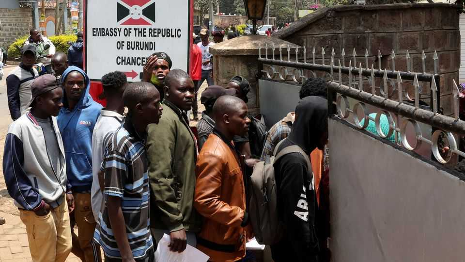

William Ruto turns against foreign traders
Kenya is the latest African country to struggle with anti-migrant sentiment

Sep 10th 2026
“Don’t talk,” whispered the Ethiopian proprietor of a small café in Nairobi, Kenya’s capital, on the afternoon of September 8th. The doors were hurriedly bolted. Music playing from a Bluetooth speaker was abruptly switched off. For the next half-hour your correspondent and a handful of others sat in silence, while city officials prowled around outside. Though the café is a legally registered business, its staff say they have faced harassment from the city council in recent days.
They are not the only ones to have been living in fear since September 2nd, when William Ruto, Kenya’s president, said foreigners running small businesses should close them “from next week”. Mr Ruto said he remained keen on foreign investment to create jobs for Kenyans, but would not tolerate foreign “hawkers” undercutting local traders. The comments were followed by a spate of xenophobic attacks in Nairobi, with migrants from Burundi, an impoverished east African state, bearing the brunt of the violence. Videos circulating on social media showed people being beaten in the street. Hundreds of undocumented migrants have flocked to the Burundian embassy, scrambling to register for emergency travel documents to go home.
Following heavy criticism in the wake of the attacks, the government softened its stance on September 8th, announcing that foreign traders would be given 90 days to ensure they held legal status in Kenya. Still, the episode is a worrying sign of hostility to migrants in Africa. In 2024 some 25m Africans lived in an African country other than their own, according to the UN’s migration agency, an increase of 17% since 2020 and of 39% since 2015. Combined with widespread dissatisfaction about a lack of jobs, that has created fertile ground for anti-migrant rhetoric. There are echoes in Kenya of the attacks carried out on foreign shop-owners in South Africa, where there has been a recent upsurge in xenophobic vigilantism.
Mr Ruto won power at Kenya’s previous election in 2022 on an anti-elitist platform, promising to champion the country’s “hustlers”. He once styled himself as a pan-African president. In 2023 he removed visa restrictions on African travellers to Kenya (though other bureaucratic hurdles were later introduced). Yet his popularity has suffered in recent years as Kenyans have become frustrated by his rising taxes and growing authoritarianism, as well as expensive fuel in the wake of the Iran war.
With a difficult election less than a year away, Mr Ruto appears to be looking for scapegoats. Resentment against migrants from poor countries like Burundi, who are often willing to sell their labour more cheaply than Kenyans, makes them an easy target. “Demagogues usually go for the weakest link,” says an opposition MP. Amid increasing disaffection about the state of the economy, “blaming immigrants has been a useful distraction.”
Yet Mr Ruto’s foreigner-bashing also reflects a wider trend. An influx of migrants from Ethiopia has sparked public anger in neighbouring Somaliland. A surge of attacks against Ethiopians there has been followed by a deportation drive by the government. There are troubling signs of similar xenophobia against Sudanese refugees in Egypt, Eritreans in Uganda, Congolese in Angola and Guineans in Senegal. The list goes on. Last year Tanzania banned foreigners from owning or operating businesses in 15 sectors, from tour guiding to artisanal mining. Mr Ruto’s trade minister complained at the time that the ban would harm Kenyan businesspeople.
Anti-migrant sentiment puts leaders in a bind. As aid from rich countries dries up, African governments are increasingly allowing refugees to work instead of paying for them to languish in camps. Mr Ruto and others are also keen to deepen economic integration on the continent, which will require easing restrictions on the free movement of people. Citizens may resent such policies. Scapegoating foreigners is a poor way of bringing them round. ■
Sign up to the Analysing Africa, a weekly newsletter that keeps you in the loop about the world’s youngest—and least understood—continent.